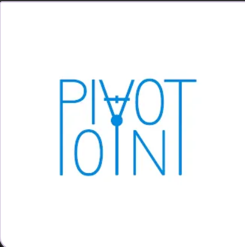

Pivot Academy Tutoring
Our Mission
To provide effective, affordable, and encouraging tutoring services that help students build confidence and achieve academic success.
Our Vision
To establish our organization in our area as a secure and reliable organization that strives to serve the community beyond academia, while maintaining our strong community-centered values.
Schedule a SessionWhy Choose Us?
Peer Perspective
As current Riverbend High School students in the prestigious Commonwealth Governor's School (CGS) program, we understand the demands of today's classrooms and use our firsthand experience to provide reliable, personalized support that helps students build confidence and achieve their academic goals.
Personalized Instruction
We believe that successful tutoring begins with strong relationships. Our tutors take the time to get to know each student, allowing us to personalize every session to their unique learning style and academic goals. Prior to each session, our tutors thoughtfully prepare customized practice materials and lesson plans, ensuring that every meeting is engaging, productive, and focused on helping your student succeed.
Affordable Support
Our program provides two options for your student:
1. Virtual Conference (Free*): Provided as hour sessions, the student will log onto a Google Meet with one of our tutors at the designated time.
2. In-Person Conference ($20/hour**): A tutor nearest to your location will travel to your home and provide tutoring services based on your agreement. Includes more personalized services for the student; those choosing this option will also receive an hour consultation session to see if this is the right fit for you.
*A guardian may be asked by the tutor to sign off on service hours.
**Those located outside the following areas may be charged a $5 traveling fee.